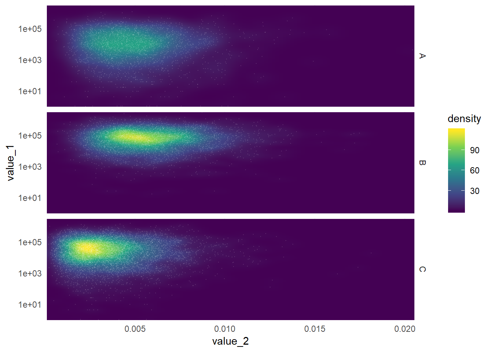

library(ggplot2)
library(magrittr)
library(dplyr)##
## Attaching package: 'dplyr'## The following objects are masked from 'package:stats':
##
## filter, lag## The following objects are masked from 'package:base':
##
## intersect, setdiff, setequal, unionCreate some simple data
cnt_group <- c(2000, 3000, 5000)
value_1 <- c((round(rbeta(n = cnt_group[1], shape1 = 1, shape2 = 700) * 1e5) ^2),
(round(rbeta(n = cnt_group[2], shape1 = 2, shape2 = 720) * 1e5) ^2),
(round(rbeta(n = cnt_group[3], shape1 = 1.5, shape2 = 750) * 1e5) ^2))
value_2 <- c(rbeta(n = cnt_group[1], shape1 = 5, shape2 = 1000),
rbeta(n = cnt_group[2], shape1 = 6, shape2 = 1000),
rbeta(n = cnt_group[3], shape1 = 3, shape2 = 800))
value_3 <- round(value_1 * value_2)
group <- c(replicate(n = cnt_group[1], expr = "A"),
replicate(n = cnt_group[2], expr = "B"),
replicate(n = cnt_group[3], expr = "C"))
df <- data.frame(value_1 = value_1,
value_2 = value_2,
value_3 = value_3,
group = group)Create grouped Galaxy-Plot
df %>%
ggplot(aes(x = value_2, y = value_1, group = group)) +
stat_density_2d(aes(fill = ..density..), geom = "raster", contour = FALSE, interpolate = TRUE) +
geom_point(color = "white", size = 0.1, alpha = 0.1) +
scale_fill_continuous(type = "viridis") +
scale_y_log10(expand = c(0, 0)) +
scale_x_continuous(expand = c(0, 0)) +
facet_grid(group ~ .) +
theme_minimal()## Warning: Transformation introduced infinite values in continuous y-axis
## Warning: Transformation introduced infinite values in continuous y-axis## Warning: Removed 11 rows containing non-finite values (stat_density2d).